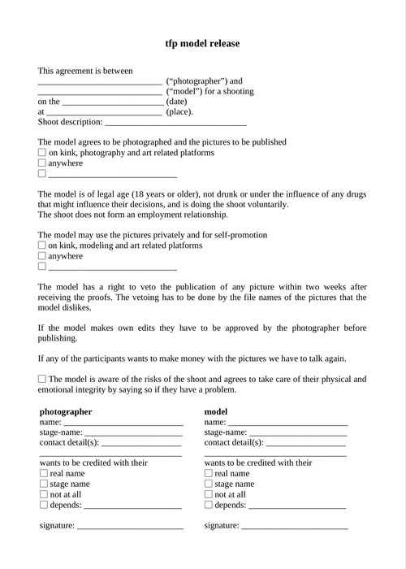

Model release
2015/2016
For some time in my life, I was involved in photographing nude and semi-nude people with the intention of publishing images, and when one does this, a model release is necessary.
It isn't only necessary for not to get sued but I also found that it was an important part of the communication between the model and me.
And after studying some of my colleagues model releases, I decided to write my own instead of using one from the internet. This was because I felt that the contact was part the agreement between the model and me, where some other part our agreement is unwritten and sometimes even nonverbal, and I wanted them to fully understand it and take it as seriously as their other interaction with me, and not as some sort of cookie warning where they click ‘agree’ and don’t think about it.
This made me boil it down to very few things that I felt were absolutely necessary for legal reasons (the model is of legal age and came voluntarily, and that the shooting doesn't form an employment situation), and otherwise write the things that I found most important because they most often go wrong (the vetoing process, who is allowed to edit photos). It is still ‘short’ and of uncomplicated language.
After some time, I was very happy to hear that models started asking other photographers for model releases that they can actually understand, I think that is great.
Text last updated: June 22nd, 2020